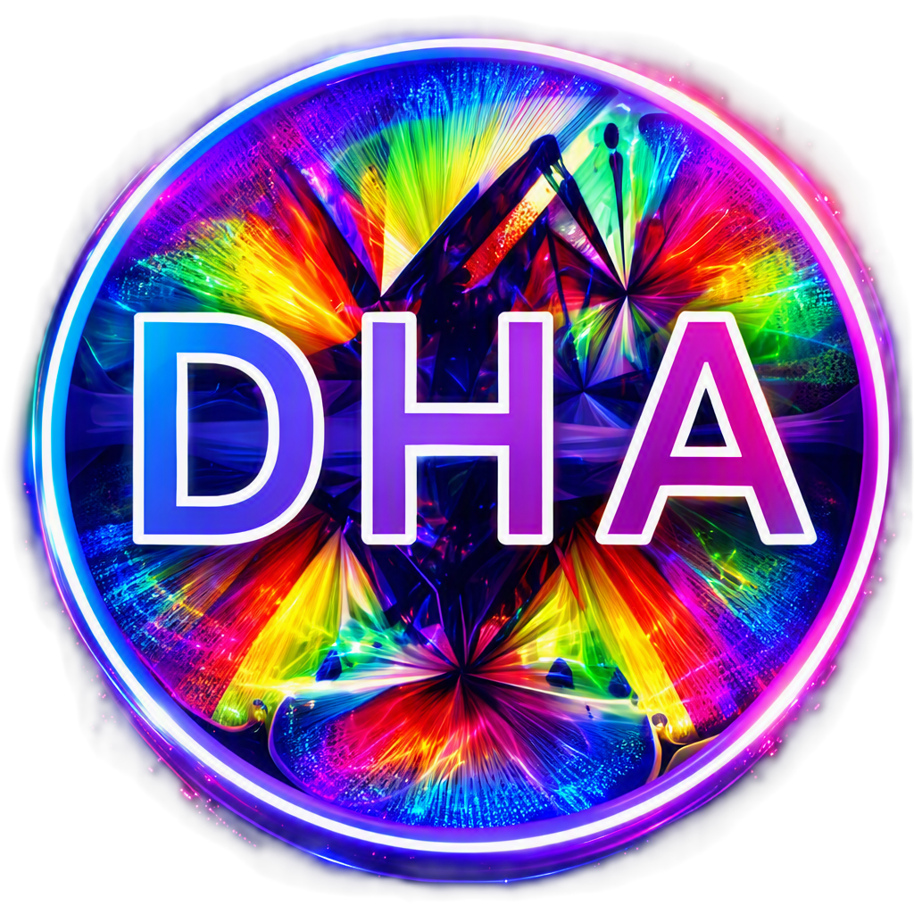

الفن الرقمي
أنظمة توليدية، فن خوارزمي، تصوير حاسوبي، ووسائط رقمية تجريبية تعيد ترتيب العلاقة بين الصورة والشفرة.
بين الفنّ والخوارزم، بين البيانات والحلم، بين الذكاء والغريزة — نحوّل الحساب إلى مساحة للتجريب الإبداعي.
على قدرِ أهلِ العزمِ تأتي العزائمُ
وتأتي على قدرِ الكرامِ المكارمُ— أبو الطيب المتنبي

الفنون الرقمية هناء استوديو تجريبي للإبداع الحاسوبي، يعمل في المساحة البينية بين البرمجيات والتعبير الفني. تنطلق هويته من حوارٍ بين هندسة العمارة العربية، وإيقاع الزخرفة، وجماليات الأنظمة الرقمية المعاصرة.
نبني البرمجيات والأنظمة البصرية، وتجارب تعلّم الآلة، والأعمال الفنية القائمة على البيانات، والأصول الرقمية الموجّهة إلى سلسلة الكتل — بروحٍ تجريبية لا تفصل بين الدقّة والخيال.
تتحرك الفنون الرقمية هناء بين التخصصات لا داخل صندوقٍ واحد. هنا تتجاور الأنظمة المرئية والبيانات والبرمجيات، وتتحول الحدود إلى مساحة للاكتشاف.
أنظمة توليدية، فن خوارزمي، تصوير حاسوبي، ووسائط رقمية تجريبية تعيد ترتيب العلاقة بين الصورة والشفرة.
تنقيب البيانات والتحليل والتصوير والحساب الإحصائي؛ تحويل الأرقام المتناثرة إلى أنماط قابلة للقراءة.
تعلّم الآلة والتعلّم العميق ورؤية الحاسوب والذكاء الاصطناعي التوليدي، مع إبقاء التجريب في قلب العملية.
الأصول الرقمية والرموز غير القابلة للاستبدال وتحليلات السلسلة والأنظمة الإبداعية اللامركزية.
مشاريع تقع بين البحث والهندسة والتجريب البصري. لكل مشروع منطقه الخاص، لكن جميعها تنطلق من فضولٍ واحد: ماذا يمكن أن نصنع عند تقاطع الأفكار؟

MLabChain منصة بحثية وهندسية في سلسلة الكتل، تربط تجارب تعلّم الآلة بسجلّ محلي قابل للتحقّق. الفكرة ليست عملةً؛ بل طريقة أكثر وضوحًا لتتبّع التجارب، وبصمات النماذج، ونتائج التدريب.

منصة للفن الحاسوبي مبنيّة على Julia، تستكشف كيف تتحوّل الصور عبر معالجة الصورة وتعلّم الآلة والأنظمة التوليدية إلى أعمال رقمية جديدة.
اطّلع على المشروع ↗
المجموعة الرسمية للفنون الرقمية هناء على OpenSea؛ مساحة لأعمال رقمية منتقاة وإبداعات توليدية ترتبط بثقافة الأصول الرقمية.
استكشف المجموعة ↗ ORIGIN STORY
ORIGIN STORYسُمّيت الفنون الرقمية هناء باسم هناء — القطّة الصغيرة التي تقف في قلب الهوية البصرية للاستوديو.
في عالمٍ تحكمه الشيفرات والنماذج والخوارزميات، يذكّرنا حضورها بأن الفضول والتفرّد واللعب ليست تفاصيل هامشية؛ إنها جزء من الخيال الذي يجعل التقنية مساحة إنسانية.